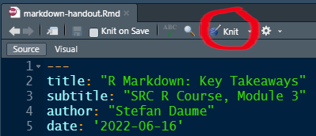
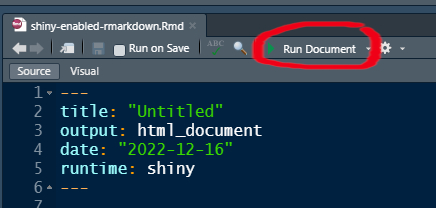

SRC PhD R course Module 7
Interactive R Markdown with Shiny
Stefan Daume
16. December 2022
SRC PhD R course Module 7
Interactive R Markdown with Shiny
Stefan Daume
Stockholm Resilience Centre, Stockholm University
& Beijer Institute of Ecological Economics
16. December 2022
Why interactive web-based R applications?
- communication of research
- data collection
- exploratory analysis
- collaboration
“shiny”
Allows to create interactive web applications running R.
Requires three components:
- an HTML user interface,
- a server component (running R logic),
- a wrapper to launch the application
In order to run this a web server is required, a basic server is built into R/RStudio
or apps can be deployed to hosted R Servers like shinyapps.io
Basic structure
library(shiny)
ui <- fluidPage(
# defines layout and web page components
)
server <- function(input, output) {
# defines the R logic and maps web page
# inputs to rendered outputs
}
shinyApp(ui = ui, server = server)Example
library(shiny)
ui <- fluidPage(
selectInput(inputId = "selectedDataset", label = "Dataset",
choices = ls("package:datasets")),
tableOutput(outputId = "myTable")
)
server <- function(input, output) {
output$myTable <- renderTable({
dataset <- get(input$selectedDataset, "package:datasets")
dataset
})
}
shinyApp(ui = ui, server = server)Test it here: https://scitingly.shinyapps.io/datasets/
Building from scratch …
- … gives complete flexibility
- … but also requires “building from scratch”
Alternative
If you are already using RMarkdown for writing your papers or to document your analyses, then it is easy to turn these documents into interactive web applications.
Today’s focus: Shiny-enabled RMarkdown
- specifically:
flexdashboards - at basic level this is just a custom (non-dynamic) HTML output of R analyses
- but it can be made interactive with
shinyand deployed as a web application - easily enabled with one line in the YAML header
Recap: (R)Markdown
Markdown
Markdown allows us to concentrate on document structure and content. We can then worry about styling and presentation later.
RMarkdown
- Purpose: dynamically weave together text, data and analysis workflows.
- This is accomplished with the
knitrpackage, an R package conveniently integrated into the R Studio UI.
Sample Markdown
Basic (R)Markdown
# Top-level header
## Second-level header
This is a list:
* with some **bold** and
* some *italic* text.
And a [hyperlink](https://bookdown.org/yihui/rmarkdown/) for good measure.Typical workflow with markdown:
- write content as a Markdown document,
- generate the final document in a suitable output format (commonly HTML, PDF, Word)
- publish
Basic formatting and structuring

RMarkdown: data-driven documents!
- Analysis can be integrated as R code into the document
- The analysis (i.e. the R code) is executed and the results updated when you
knitthe document. - Text and code are interspersed.
- Code sections are included in code chunks like this.
The ‘YAML’ header
The YAML header must be placed at the beginning of a document and is enclosed by three dashes ---.
---
title: "Untitled"
output: html_document
date: '2022-12-16'
---Above is the default YAML header when generating an RMarkdown file in R Studio.
Translating RMarkdown to HTML, PDF, Word etc
The RMarkdown document is knit to the output format specified in the YAML header.

Turning RMarkdown into a shiny app
---
title: "Untitled"
output: html_document
date: '2022-12-16'
runtime: shiny
---Now “knit” is replaced by “run”
The output format is now a web application.

And you need the “app logic”
Which will be included in the code chunks of the R Markdown document.
Example and Exercise
Create a sample interactive R Markdown document
In RStudio select: File > New File > R Markdown

Default example
Interactive code in the default example
```{r eruptions, echo=FALSE}
inputPanel(
selectInput("n_breaks", label = "Number of bins:",
choices = c(10, 20, 35, 50), selected = 20),
sliderInput("bw_adjust", label = "Bandwidth adjustment:",
min = 0.2, max = 2, value = 1, step = 0.2)
)
renderPlot({
hist(faithful$eruptions, probability = TRUE, breaks = as.numeric(input$n_breaks),
xlab = "Duration (minutes)", main = "Geyser eruption duration")
dens <- density(faithful$eruptions, adjust = input$bw_adjust)
lines(dens, col = "blue")
})
```Change the output format to flex_dashboard
Change the layout
Dashboards are composed of rows and columns. Each output component is indicated by a level 3 header (i.e. ###).
- turn all sections into components
- change the
flex_dashboardlayout to vertical
---
title: "Untitled"
output:
flexdashboard::flex_dashboard:
vertical_layout: scroll
date: "2022-12-16"
runtime: shiny
---Split input and output logic into different “components”
Change the component layout
flexdashboard allows flexible layouts that are basically controlled through markdown section headers at three levels.
- create two separate dash board pages by adding a level 1 markdown section header above the first two and the last “components” respectively. Both the header variant
#and===========================will work.
Create a nested layout for the first page
Place the “Inputs” and “Outputs” sections next to each other. This can be achieved by adding a level 2 markdown section header named Column above each of these sections. Both the header variant ## and ----------------------- will work.
Change the dashboard theme and add
flexdashboard offers flexible styling of the output. Several built-in themes can be applied via the YAML header.
and more options …
There is a broad range of styling options and components that can be controlled via the YAML header and standard R Markdown elements.
Thank You!
Key Resources
- R Markdown
- R Markdown: The Definitive Guide (Xie, Allaire, and Grolemund 2022)
- Cheatsheet: Dynamic documents with rmarkdown cheatsheet
- Git/Github:
- Happy Git and GitHub for the useR (Bryan 2021)
- “Excuse me, do you have a moment to talk about version control?” (Bryan 2017)
- Advanced git use: Pro Git book (Chacon and Straub 2014)
- How to write a great commit message
References
Bryan, Jennifer. 2017. “Excuse me, do you have a moment to talk about version control?” PeerJ Preprints 5:e3159v2 (August). https://doi.org/10.7287/PEERJ.PREPRINTS.3159V2.
———. 2021. “Happy Git and GitHub for the useR.” https://happygitwithr.com/.
Chacon, Scott, and Ben Straub. 2014. Pro Git. Apress. https://doi.org/10.1007/978-1-4842-0076-6.
Xie, Yihui, J. J. Allaire, and Garrett Grolemund. 2022. “R Markdown: The Definitive Guide.” https://bookdown.org/yihui/rmarkdown/.
Colophon
SRC PhD R course Module 7 — Interactive R Markdown with Shiny" by Stefan Daume
Presented on 16. December 2022.
This presentation can be cited using: doi:…
PRESENTATION DETAILS
Author/Affiliation: Stefan Daume, Stockholm Resilience Centre, Stockholm University
Presentation URL: https://sdaume.github.io/r-course-module-3/slides/shiny-module.html
Presentation Source: [TBD]
Presentation PDF: [TBD]
CREDITS & LICENSES
This presentation is delivered with the help of several free and open source tools and libraries. It utilises the reveal.js presentation framework and has been created using RMarkdown, knitr, RStudio and Pandoc. highlight.js provides syntax highlighting for code sections. MathJax supports the rendering of mathematical notations. PDF and JPG copies of this presentation were generated with DeckTape. Please note the respective licenses of these tools and libraries.
If not noted and attributed otherwise, the contents (text, charts, images) of this presentation are Copyright © 2022 of the Author and provided under a CC BY 4.0 public domain license.